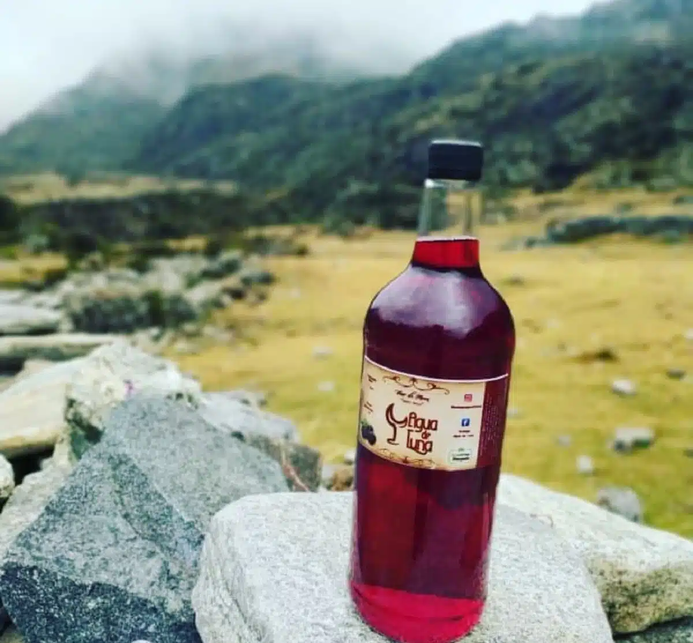

Masato de Arroz
Región: Táchira / Andes
Bebida espesa y refrescante, considerada el acompañante infaltable en las ferias y fiestas patronales.
Ver Detalles y PreparaciónSeleccione una bebida para conocer sus ingredientes y preparación.
Región: Táchira / Andes
Bebida espesa y refrescante, considerada el acompañante infaltable en las ferias y fiestas patronales.
Ver Detalles y Preparación
Región: Páramos Andinos
Bebida reconfortante e histórica, ideal para combatir el clima frío de las altas montañas andinas.
Ver Detalles y Preparación
Región: Andes Venezolanos
Bebida ancestral a base de masa de maíz fermentada con guarapo de piña y especias. El auténtico sabor de nuestras celebraciones.
Ver Detalles y Preparación
Región: Páramos Andinos
Aguardiente tradicional destilado de hinojo y otras hierbas, ideal para las bajas temperaturas.
Ver Detalles y Preparación
Región: Páramos / La Grita
Vino artesanal dulce elaborado a partir de la fermentación de las moras cultivadas en las zonas altas.
Ver Detalles y Preparación
Región: Andes
Bebida caliente a base de miche hervido con papelón, frutas y especias tradicionales.
Ver Detalles y Preparación